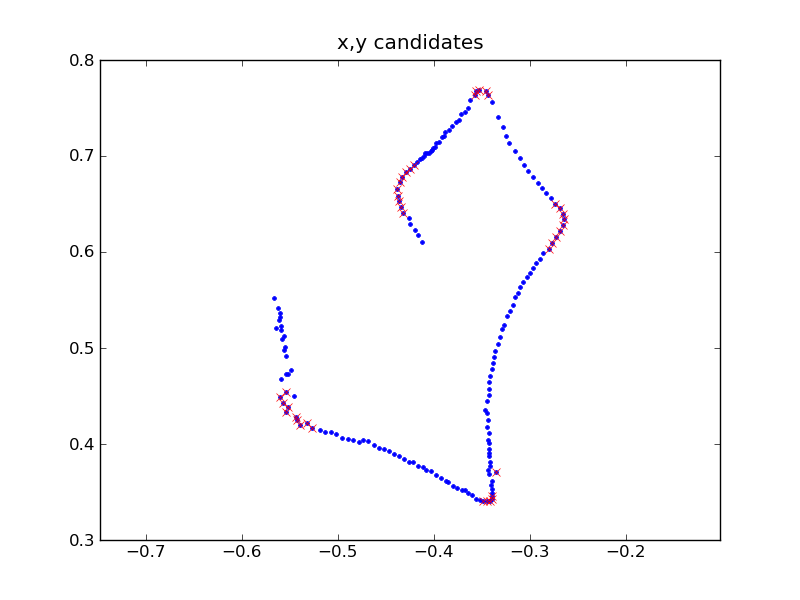
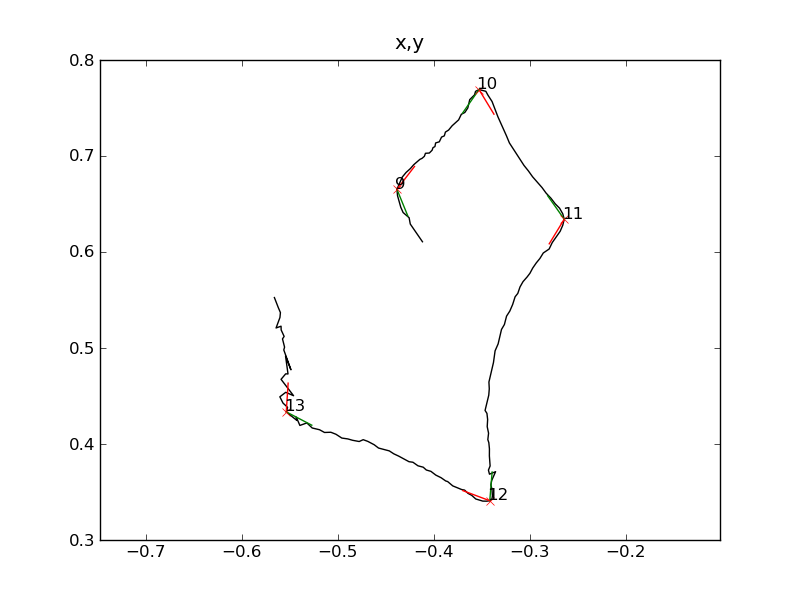

geometrical_saccade_detector¶
This package provides a saccade detector suitable for fly trajectory. The executables contained are meant to work with the data provided by the flydra system; however, the main algorithm is pretty much isolated from the I/O routines, and it should be easy to apply to other sources of data.
See this_example of the algorithm output.
 Left: Data from flydra system (Kalman filtered, not smoothed). Right: Detected saccades in the data. Each saccade is indicated by two lines that show the estimated initial and final orientation.
Install¶
Development happens on github:
http://github.com/AndreaCensi/geometrical_saccade_detector


You can download this project in either zip or tar formats. You can also clone the project with Git by running:
$ git clone git://github.com/AndreaCensi/geometric_saccade_detector
Method¶
Detecting saccades is a pain. No, really! It is one of those problems that look easy, but the intuitive solution does not work as well. The problems come from three root causes:
- The fly dynamics is fast;
- The data is noisy;
- Flies do whatever they want.
This package is the third iteration of the algorithm. It is a balance between simplicity and accuracy.
The philosophy is to make as few data manipulation passes as possible, and have an algorithm which can be used on very noisy data with reasonable results.
add link to pdf with algorithm explanation
Command line executables¶
There are two command line executables: geo_sac_detect and geo_sac_compact.
Executable geo_sac_detect¶
The first, geo_sac_detect is the main program that reads flydra’s .kh5 files and produces a file with the list of saccades. It is invoked as follows:
$ geo_sac_detect [--debug_output] [--nocache] --output <DIR> <files or directories>
You can pass either the name of some .kh5 files, or names of directories containing them, in which case they will be searched recursively.
<DIR> is the output directory. Regardless of the directory structure of <DIR>, the files are stored here in a flat list. Three files are created for each sample:
- DIR/SAMPLE-saccades.h5 — Authoritative format.
- DIR/SAMPLE-saccades.mat — Matlab v7.2 format, useful for quick viewing from Matlab.
- DIR/SAMPLE-saccades.pickle — Python serialization format, useful for quick viewing from ipython.
If --nocache is not passed, the computation will be skipped if a computed file is already found in <DIR>.
If --debug_output is passed, extensive HTML+png output will be created showing the detection results and intermediate computations. This is stored in <DIR>/<sample>/index.html. See _this_example.
There are other options. There are a few options concerning flydra:
--min_frames_per_track Minimum number of frames per track [= 400]
--confirm_problems Stop interactively on problems with log files'
'(e.g.: cannot find valid obj_ids) [default: False]
--smoothing Uses Kalman-smoothed data. [default: false]
--dynamic_model_name Smoothing dynamical model [default: mamarama, units: mm]
Finally, there are several options for setting the detection parameters:
--deltaT_inner_sec Inner interval [= 0.066]
--deltaT_outer_sec Outer interval [= 0.166 ]
--min_amplitude_deg Minimum saccade amplitude (deg) [= 25]
--min_linear_velocity Minimum linear velocity when saccading (m/s) [= 0.1]
--max_linear_acceleration Maximum linear acceleration when saccading (m/s^2) [=20]
--max_angular_velocity Maximum angular velocity when saccading (deg/s) [=8000]
--max_orientation_dispersion_deg Maximum dispersion (deg) [= 15]
--minimum_interval_sec Minimum interval between saccades. [= 0.166]
Executable geo_sac_compact¶
This executable reads the data for each sample, and creates one file with a table containing the data for all samples.
It is invoked as follows:
$ geo_sac_compact <DIR>
It will look for files named <DIR>/<SAMPLE>-saccades.h5 and it will create <DIR>/saccades.{h5,mat,pickle}.
Algorithm¶
to write
Saccade data format¶
A .h5 file created by geo_sac_detect and geo_sac_compact contains a single table called /saccades.
The following are the most important fields:
- time_start
- Timestamp at which the saccade started (seconds)
- orientation_start, orientation_stop
- Initial and final orientation (degrees)
- time_passed
- Time since last saccade (seconds).
- amplitude
- Saccade amplitude (degrees). This is always positive.
- sign
- Saccade direction (+1: left, -1: right)
- top_velocity
- Top velocity estimated during saccade (degrees/second). This is currently computed by smoothing the data for robustness, so it probably underestimates the true velocity.
- duration
- Saccade duration (computed as amplitude/top_velocity).
Note that all fields concerning angles use degrees, not radians.
There are other fields used for DB purposes:
- sample
- The timestamp describing the sample. Format: YYYYMMDD_HHmmSS.
- sample_num
- Index associated to a sample. Filled by geo_sac_compact.
- species
- Currently set to Melanogaster.
- stimulus
- The stimulus used in mamarama.
There are still other fields used mainly for debug purposes. See the file structures.rb for a description.